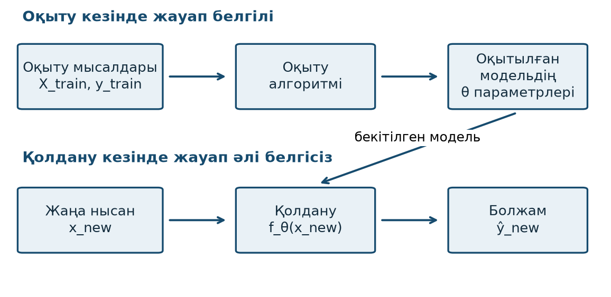
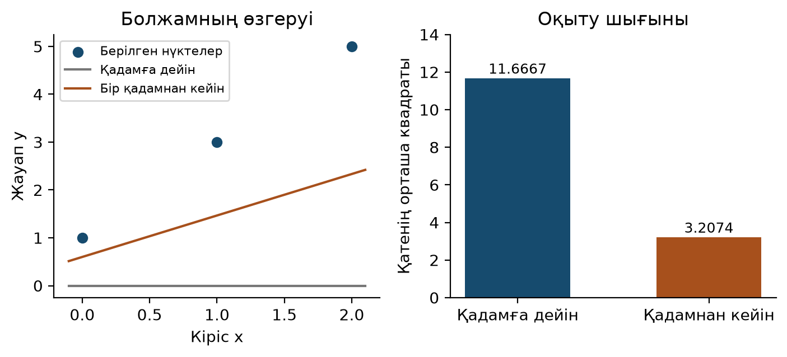
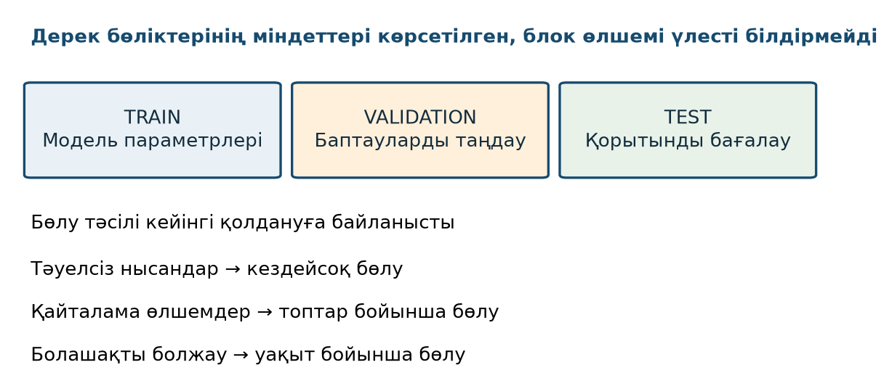
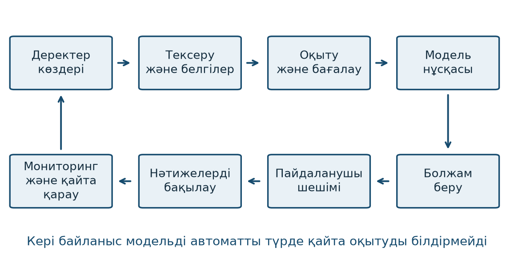
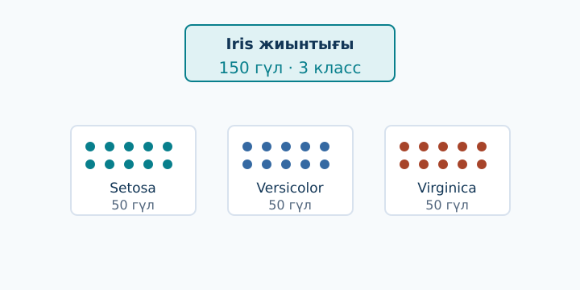
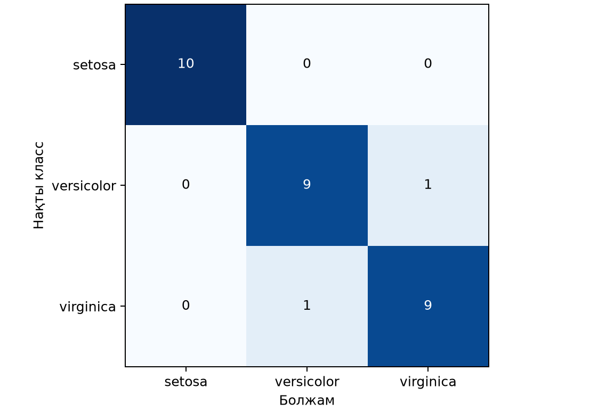
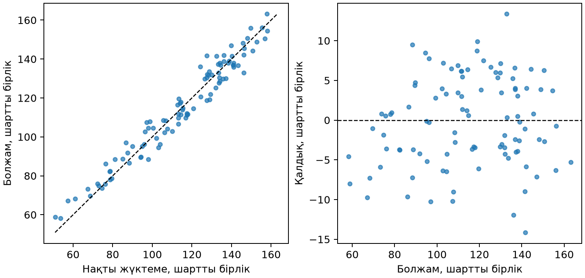

1-тарау. Машиналық оқытуға кіріспе. ML-жүйелерді құрудың негізгі міндеттері, әдістері мен кезеңдері.
1.1 Тақырып бойынша бағдар
Машиналық оқыту (machine learning, ML) деректердің көмегімен қандай шешімді жақсарту керектігі туралы сұрақтан басталады. Кітапхананы таңдау мәселесі кейінірек туындайды. Нейрондық желіні (neural network) оқыта алатын, бірақ белгілердің қай сәтте алынатынын және нәтижені қалай тексеретінін анықтамаған инженер жұмысқа жарамды жүйені әлі құрған жоқ. Бұл тарауда мазмұндық міндеттен алғашқы қайталанатын экспериментке дейінгі жолды өтіп, есептеулердің сапасы мен міндеттің қойылу сапасын ажыратуды үйренеміз.
Тараудың мақсаты — машиналық оқытуды деректерден тәуелділіктерді зерттеу тәсілі әрі инженерлік үдеріс ретінде тұтас түсіндіру. Тарауды меңгергеннен кейін студент бақылау объектісін, белгілерді және мақсатты айнымалыны анықтай алады; регрессияны, жіктеуді, кластерлеуді және бекіту арқылы оқытуды ажыратады; қарапайым шығын функциясын жазады; оқыту, валидациялық және тестілік іріктемелердің мақсатын түсіндіреді; базалық модельді құрып, бағалайды; жүйені қолданысқа енгізгеннен кейінгі құрамдастарын атайды. Бұл нәтижелер қолданыстағы силлабустың 1.1 және 1.2 индикаторларына сәйкес келеді.
Пререквизиттер — функция мен вектор ұғымдары, арифметикалық орта, кестелермен орындалатын қарапайым амалдар және Python негіздері. Бір оқу есебінде туынды қолданылып, есептеудің әр қадамы түсіндіріледі. Зертханалық жұмысты өз бетінше орындау үшін меншіктеуді, функцияны шақыруды, тізімді және кесте бағанына жүгінуді түсіну жеткілікті. Әзірге күрделі алгоритмдер оқытылатын түрлендірулер ретінде қарастырылады; олардың құрылысы кейінгі тарауларда ашылады.
Негізгі ұғымдар — объект, белгі (feature), мақсатты айнымалы (target variable), модель, параметр, гиперпараметр, оқыту, қорытынды шығару, шығын функциясы (loss function), жалпылау, базалық модель, деректердің ағып кетуі және қайталанымдылық. Тараудың практикалық маңызы — жобадағы қатені сырттай тартымды, бірақ жаңсақ метрикаға айналғанға дейін анықтай білу. Бұл электр энергиясын тұтынуды болжауға, датчик көрсеткіштерін талдауға, мәтіндерді тануға және зияткерлік басқару жүйелерінің басқа міндеттеріне қатысты.
Оқудың ұсынылатын реті мынадай. Алдымен өз міндетіңіздің мысалын тұжырымдап, болжам жасалатын сәтті анықтаңыз. Одан кейін деректердің математикалық жазылуын қадағалап, шығындарды қолмен есептеңіз. Содан соң бөлу хаттамасын оқып, Python тіліндегі екі мысалды орындаңыз. Зертханалық жұмыс осы әрекеттерді біріктіреді. Соңында есептерді көмексіз шығарып, тесттен өтіңіз. Егер терминнің түсіндірмесі анық болмаса, тиісті мысалға оралып, қалған шарттарды сақтай отырып, бір шартын өзгертіп көріңіз.
1.2 Қолданбалы мәселеден оқыту міндетіне көшу
Оқу жағдайын қарастырайық. Диспетчер зертханалық ғимараттың электр жүктемесін келесі аралық басталғанға дейін бір сағат бұрын бағалауы керек. Болжамдағы санның өзі түпкі мақсат емес. Ол жабдықтың жұмыс режимін немесе қуатты бөлуді жоспарлауға көмектесуі тиіс. Сондықтан алдымен нәтижені кім қолданатынын, оны нақты қашан алатынын, қандай әрекеттер жасауға болатынын және қателердің қандай қауіп төндіретінін анықтайды. Егер режимді тәулік ішінде өзгерту мүмкін болмаса, алдағы бес минутқа арналған болжам орташа қатесі аз болғанның өзінде пайдасыз болуы мүмкін.
Мұндай жобада бақылау бірлігі ретінде ғимарат жұмысының бір сағатын алуға болады. Мақсатты айнымалы — келесі сағаттағы киловаттпен өлшенетін орташа қуат. Кіріс белгілерге сыртқы ауа температурасы, сабақ кестесі және бұрын өлшенген жүктеме кіруі мүмкін. Болашақ сағатта нақты бақыланатын температура мен диспетчерге алдын ала қолжетімді температура болжамын ажырату маңызды. Бұл екі айнымалының атаулары ұқсас болғанымен, қолжетімділігі әртүрлі. Егер нақты қолдану кезінде болашақ температура әлі белгісіз болса, бірінші айнымалы оқу бағасын негізсіз жақсы етіп көрсетер еді.
Бір құбылыстың негізінде бірнеше міндет қоюға болады. Егер қуатты болжау қажет болса, регрессия міндетін шешеміз. «Рұқсат етілген шек асырыла ма?» деген сұрақ қойылса, жіктеу міндеті туындайды. Дайын белгілерсіз тұтынудың типтік бейіндерін бөліп алу керек болса, кластерлеу қолданылады. Егер жүйе басқарушы әрекеттерді ретімен таңдап, олардың салдары туралы бағалауды кейінірек алса, міндет бекіту арқылы оқытуға (reinforcement learning) жатуы мүмкін. Міндет түрін тек пәндік саланың атауына қарап таңдау мүмкін емес. Оны күтілетін шығыс пен қолжетімді оқыту сигналы анықтайды.
Міндеттің қойылуы рұқсат етілетін қолданудың шекарасын да белгілейді. Бір ғимараттың сағаттық жұмысы бойынша оқытылған модель басқа кампустың жүктемесін автоматты түрде болжай алады деп есептеуге болмайды. Мұндай көшіру үшін қуат диапазондарын, жабдық құрамын, күнтізбені және өлшемдердің сәйкестігін тексеру қажет. Деректер жиынтығы абстрактілі «жалпы тұтынуды» емес, объектілердің белгілі бір жиынтығын бақылаудың нақты рәсімін сипаттайды. Осы рәсім эксперимент қандай қорытындыларды растай алатынына әсер етеді.
Кодты алғаш іске қоспай тұрып, міндет паспортын жазып алған пайдалы. Паспорт зерттеуді алмастырмайды, бірақ оны тексеруге мүмкіндік береді. Объектіні, болжам көкжиегін, шығыс шамасын, қолдануға рұқсат етілген белгілерді, олардың алыну сәтін, базалық шешу тәсілін және табыс критерийін көрсетіңіз. Болжам қабылданбайтын немесе адамға берілетін жағдайларды бөлек анықтаңыз. Мысалы, негізгі датчиктің деректері болмаған кезде жетіспейтін мәнді кез келген санмен механикалық түрде толтырудың орнына резервтік ережеге көшу қажет болуы мүмкін.
Кесте 1.1. Бір басқару объектісіне қатысты міндеттің әртүрлі қойылуы
| Сұрақ | Оқыту сигналы | Модель шығысы | Не тексеріледі |
|---|---|---|---|
| Бір сағаттан кейінгі қуат қандай болады? | Сағат аяқталғаннан кейін өлшенген қуат | кВт-пен берілген сан | Шама қатесі және оның салдары |
| Шектен асу оқиғасы бола ма? | Шектен асу белгісі | Класс немесе ықтималдық | Анықталмай қалған оқиғалар мен жалған дабылдар |
| Жүктеменің қандай бейіндері ұқсас? | Дайын кластар берілмеген | Топтар және олардың сипаттамасы | Топтаудың орнықтылығы мен пайдалылығы |
| Жинақтауыштың режимін қалай өзгерту керек? | Күйлер, әрекеттер мен сыйақылар тізбегі | Әрекет немесе стратегия | Жиынтық әсер мен шектеулер |
Мұндай паспорт үшін «дәлдікті арттыру» деген тұжырым тым көмескі. Метриканы, оны есептеу тәсілін және пайдаланудың жарамды шарттарын атау қажет. Тіпті «орташа абсолюттік қатені азайту» дегеннің өзі нақтылауды талап етеді. Қай ережемен салыстырғанда, қай кезеңде және есептеулерге қанша ресурс жұмсап азайту керек? Жаңа модельдің артықшылығы қолданыстағы шешіммен салыстырылады. Ол кәдімгі кесте, алдыңғы мән немесе сараптамалық формула болуы мүмкін.
Кейде міндетті талдау оқыту қажет еместігін көрсетеді. Егер есептелетін төлем бекітілген тарифке және дәл белгілі шығынға тәуелді болса, статистикалық модельден гөрі арифметикалық формула қолайлы. Оқиға толық белгілі физикалық шектеумен анықталса, алдымен сол шектеу қолданылады. Машиналық оқыту маңызды тәуелділік белгісіз немесе оны тікелей сипаттау тым күрделі болғанда әрі деректерде оны зерттеуге жеткілікті мысалдар болғанда пайдалы. Көлемді файлдың болуы ондай сигналдың бар екенін өздігінен білдірмейді.
1.3 Нақты не оқытылады
Дәстүрлі бағдарламада әзірлеуші кірісті нәтижеге түрлендіру ережелерін өзі береді. Оқытылатын жүйе де бағдарламаны орындайды, бірақ ережелердің бір бөлігі мысалдар бойынша табылған параметрлермен анықталады. Сондықтан бағдарламалау мен оқытуды бір-біріне қарсы қою шартты ғана. Оқыту алгоритмі, деректерді дайындау және бағалау рәсімі бағдарлама болып қала береді. Айырмашылық болжам үшін пайдаланылатын нақты тәуелділіктің қайдан алынатынында.
Объектінің кіріс сипаттамасын x векторымен, ал ізделетін жауапты y арқылы белгілейік. θ параметрлері бар модель x бойынша болжам беретін f функциясын анықтайды. y үстіндегі белгі бақыланған жауап емес, есептелген бағалау туралы сөз болып отырғанын көрсетеді:
Сызықтық оқу мысалында кіріс ретінде бір өлшем алынады, ал модель b бос мүшесі мен w коэффициентінің x-ке көбейтіндісінің қосындысы түрінде жазылады. Мұнда θ екі саннан тұрады. Оқыту кезінде алгоритм осы сандарды таңдайды. Қорытынды шығару (inference) кезінде жаңа объект үшін бұрын таңдалған мәндер пайдаланылады. Егер бағдарлама жаңа жауап келген сайын параметрлерді өзгертсе, бұл — анық сипатталып, тексерілуге тиіс қосымша жаңарту режимі.
Модель параметрлерін (model parameters) гиперпараметрлерден (hyperparameters) ажырату керек. Сызықтық тәуелділіктің коэффициенттері оқыту деректері бойынша бағаланады. Ағаштың ең үлкен тереңдігі немесе регуляризация күші модельді іздеу тәсілін анықтайды және оларды әдетте әзірлеуші не баптау рәсімі таңдайды. Бұл шекара философиялық тұрғыдан абсолютті емес. Күрделі жүйе басқа жүйеде қолмен берілетін шаманы өзі оқып үйренуі мүмкін. Практикада қандай шамалар train бойынша есептелгенін, қайсысы validation бойынша таңдалғанын және қайсысы алдын ала бекітілгенін жазу маңыздырақ.
Белгіленген мысалдар жиынтығы жұптар тізбегі ретінде жазылады. X матрицасында бақылаулардың n жолы және белгілердің p бағаны, ал y векторында оларға сәйкес жауаптар болады:
Бұл жазылу сандық жауапты болжайтын регрессия үшін ыңғайлы. Жіктеуде y кластардың ақырлы жиынына жатады, сондықтан оған арналған нақты сандар кеңістігінің белгісі тиісті белгілер жиынымен алмастырылады. Кіріс объектісі мәтін, кескін немесе тізбек те болуы мүмкін. Онда сандық матрица деректерді ұсынудан кейін пайда болады немесе одан күрделі құрылым қолданылады. Машиналық оқыту ұғымы кесте пішінімен анықталмайды.
Бір баған әрдайым бір мазмұндық факторға тең бола бермейді. Кодтаудан кейін санат бірнеше сандық бағанға, мәтін мыңдаған координатаға, ал уақыт қатары терезелер жиынтығына айналуы мүмкін. Керісінше, бірнеше бастапқы өлшем бір сипаттамаға жинақталуы да мүмкін. Ұсыну тәсілі таңдалған алгоритм қандай тәуелділіктерді анықтай алатынына әсер етеді. Сондықтан алдын ала өңдеу файлды техникалық дайындаумен ғана шектелмей, зерттеу моделінің бір бөлігіне айналады.

Дереккөз: авторлық 1-дәрістің 4 және 14-беттерінің тақырыбы бойынша әзірленген түпнұсқа сызба. Графика осы қолжазба үшін жасалған.
1.1-суретте жауаптар оқыту мен сапаны есептеу рәсіміне кіреді, бірақ әдеттегі болжау кезінде жаңа нақты жауап әлі қолжетімсіз. Осы қарапайым айырмашылық белгілер құрамын тексеруге көмектеседі. Егер жаңа объект үшін белгі болжанатын нәтиже орындалғанға дейін алынбаса, оны оқу кестесінен жұмыс болжамына көшіруге болмайды. Жауаппен жоғары корреляция бұл мәселені жоймайды.
«Жасанды интеллект» (artificial intelligence, AI) термині ережелер жүйелері мен іздеуді қоса алғанда, зияткерлік мінез-құлықты құру әдістерінің кеңірек аясын қамтиды. Машиналық оқыту мысалдардан заңдылықтарды анықтау әдістерінің саласын құрайды. Терең оқыту (deep learning, DL) көпқабатты нейрондық модельдермен және ұсынуларды үйренумен байланысты. Генеративтілік деректерді модельдеу және жасау қабілетін сипаттайды. Ол сапаның әмбебап жеке сатысын білдірмейді. Терең нейрондық желіге жатпайтын генеративті модельдер де бар; терең модельдердің барлығы мәтін немесе кескін жасамайды.
Терминдерді осылай дәл қолдану шешімді таңдауға әсер етеді. Модель атауында «генеративті» сөзінің болуы оның жүктемені сандық болжауға жарамдылығын дәлелдемейді, ал үлкен модель базалық модельмен (baseline) салыстыру қажеттігін жоймайды. Кітапта әдістер міндетке, жорамалдарға, тексерудің сапасына және қолдану құнына қарай салыстырылады. Алгоритмдер тобының атауы талдаудың қорытындысы емес, оның басталуына негіз болады.
1.4 Оқытудың негізгі түрлері
Мұғаліммен оқытуда (supervised learning) кірістер мен жауаптардың жұптары қолжетімді болады. Мұндағы «мұғалім» белгілеу көзін білдіреді. Ол өлшеу аспабы, тарихи нәтиже, сарапшы қорытындысы немесе құжатталған ереже болуы мүмкін. Белгілеуде қате болуы ықтимал. Егер әр сарапшы класты әртүрлі түсінсе, алгоритм осы екіұштылықты қайталайды. Сондықтан мақсатты бағанды даусыз ақиқат ретінде қабылдамай, y мәнін алу тәсілін сипаттау керек.
Регрессия (regression) сандық шаманы болжайды. Рұқсат етілген мәндер шектеулі диапазонда жатуы мүмкін. Кейбір шығыстарға, мысалы, теріс болмау немесе бүтін сан болу талабын орындайтын арнайы модель қажет. Жіктеу (classification) санатты болжайды, көбіне алдымен кластардың ықтималдықтарын бағалайды. Санаттың сандық коды міндетті регрессияға айналдырмайды. 2-класс мазмұндық мағынада 1 және 3-кластардың «арасында» орналасуға міндетті емес. Реттік санаттарда шынымен белгілі бір рет бар, бірақ оны пайдалану бөлек негіздеуді талап етеді.
Жіктеу ықтималдығы мен қабылданған әрекет те бір ұғым емес. Оқиға ықтималдығының 0,7 деп бағалануы міндетті түрде дабыл беру керек дегенді білдірмейді. Шешім қатенің құны мен шекке тәуелді. Алғашқы зертханалық жұмыста үдеріспен танысу үшін жіктеуіштің стандартты шешімін пайдаланамыз. 5 және 6-тарауларда метрикалар, шектер және теңгерімсіздік егжей-тегжейлі қарастырылады. Ықтималдықтардың сапасы мен түпкі шешімдердің сапасы әртүрлі болуы мүмкін екенін қазірден есте ұстаған жөн.
Мұғалімсіз оқытуда (unsupervised learning) негізгі міндетке арналған сыртқы жауаптар берілмейді. Алгоритм кірістердің құрылымын зерттейді. Оған объектілердің жақындығы, ең үлкен өзгергіштік бағыттары немесе тығыздығы төмен аймақтар жатады. Нәтиже таңдалған ұсыну тәсілі мен критерийге тәуелді. Кластерлеу студенттерді сабаққа қатысуы мен бағалары бойынша топтарға бөлсе, бұл объективті «студент типтерінің» бар екенін әлі дәлелдемейді. Алынған топтар — нақты белгілерге қолданылған нақты алгоритмнің нәтижесі. Ол мазмұндық түсіндіруді қажет етеді.
Өлшемділікті азайту (dimensionality reduction) бақылаулардың ықшам ұсынуын құрады. Мұндай міндет сығу, визуалдау және кейінгі оқыту үшін пайдалы, бірақ әртүрлі мақсаттар әртүрлі әдістерді талап етуі мүмкін. Ең жақын нүктелер арасындағы қашықтықтарды сақтау болжам үшін пайдалы бүкіл ақпаратты сақтаумен бірдей емес. Тіпті сенімді көрінетін екіөлшемді сурет жіктеу сапасын автоматты түрде растамайды. Ұсынудың қолданбалы міндетпен байланысын эксперимент арқылы тексеру қажет.
Өздігінен бақыланатын оқытуда (self-supervised learning) мақсатты тапсырма бақылаулардың өзінен жасалады. Мысалы, тізбектің бір бөлігін жасырып, модельді оны қалған контекст бойынша қалпына келтіруге үйретеді. Белгілеу жоқ жерден пайда болмайды. Ол тапсырманы құрастыру тәсілімен анықталады. Бұл тәсіл белгіленбеген үлкен массивтерді пайдалануға мүмкіндік береді, бірақ кейінгі қолдану сапасы алдын ала оқыту міндетін шешуге қандай заңдылықтар қажет болғанына тәуелді.
Self-supervised learning ұғымын сенімді жауаптарды толық дербес алумен шатастыруға болмайды. Модель сөздерді сәтті қалпына келтіріп, сонымен бірге нақты фактілерге қатысты қате түсіндірме беруі мүмкін. Алдын ала оқыту пайдалы ұсынуларды қалыптастырады, ал нақты қолдануға жарамдылық бөлек бағаланады. 12, 13 және 15-тарауларда мәтіндік векторлардан тасымалды оқытуға және алдын ала оқытылған үлкен модельдерге өту жолын қарастырамыз.
Бекіту арқылы оқыту агенттің ортамен өзара әрекетін қарастырады. s күйінде агент a әрекетін таңдайды, орта жаңа күйге өтіп, r сыйақысын хабарлайды. Күтілетін жинақталған нәтижені арттыратын стратегияны табу қажет. Әрекеттегі қате болашақта алынатын деректерді өзгерте алады. Бұл — тәуелсіз мысалдардың әдеттегі кестесінен елеулі айырмашылық. Жүйенің мінез-құлқы оның кейінгі тәжірибесіне әсер етеді.
Энергия жинақтауышын басқарғанда сыйақы электр энергиясын сатып алу құнын, тозуды және шектеулердің бұзылуын ескеруі мүмкін. Алайда қарапайым айып физикалық талаптардың қауіпсіз орындалуына кепілдік бермейді. Егер әрекетке жол берілмесе, шектеулердің орындалуы тиісті басқару архитектурасы және тексеру арқылы қамтамасыз етілуі керек. Бұл кітапта бекіту арқылы оқыту әдістердің жалпы картасының бір бөлігі ретінде беріледі. Оңтайлы басқарудың егжей-тегжейлі теориясы осы силлабустың базалық зертханалық жұмыстарының аясынан тыс қалады.
Кесте 1.2. Оқыту түрі сигналдың көзімен және өзара әрекет тәсілімен анықталады
| Тәсіл | Сигнал қайдан алынады | Типтік нәтиже | Тексерудің негізгі сұрағы |
|---|---|---|---|
| Мұғаліммен | Бақыланатын немесе белгіленген жауаптар | Сан, класс немесе ықтималдық болжамы | Жаңа жарамды объектілерде жұмыс істей ме? |
| Мұғалімсіз | Кіріс деректерінің құрылымы мен таңдалған критерий | Топтар, ұсынулар, ауытқушылық | Табылған құрылым мағыналы әрі орнықты ма? |
| Өздігінен бақыланатын | Деректердің өзінен жасалған тапсырма | Ұсыну немесе алдын ала оқытылған модель | Сигнал қажетті міндетке көшіріле ме? |
| Бекіту арқылы | Тізбекті әрекеттердің салдары | Әрекетті таңдау стратегиясы | Бүкіл көкжиекте мінез-құлық пайдалы ма? |
Нақты жоба осы тәсілдерді біріктіре алады. Алдымен ұсыну қолмен берілген белгілерсіз оқытылады, содан кейін шағын белгіленген іріктеме бойынша жіктеуіш құрылады, ал оның нәтижесі шешім қабылдауды қолдау жүйесінде пайдаланылады. Мұндай үйлесім әрбір шекараны тексеру қажеттігін жоймайды. Алдын ала оқытуға қандай деректер қатысқанын, жаңа объект деп ненің есептелгенін және белгілеудің қашан пайда болғанын анықтау керек. Жобаны бір сөзбен жіктегеннен гөрі, оның кезеңдерін ашық сипаттау пайдалырақ.
1.5 Шығын функциясы және деректер бойынша оқыту идеясы
Параметрлерді таңдау үшін болжам мен жауапты сандық түрде салыстыру қажет. L шығын функциясы бір бақылау үшін қатенің құнын анықтайды. Регрессияда айырманың квадраты жиі қолданылады. Үлкен ауытқуға кіші ауытқудан едәуір үлкен айып беріледі. Оқыту іріктемесіндегі орташа квадраттық қате эмпирикалық, яғни деректер бойынша есептелген тәуекел болып табылады:
R үстіндегі белгі барлық болашақ объектілердегі кепілдендірілген сапаны емес, іріктеме бойынша тәуекел бағасын білдіреді. Бұл — нақты іріктемедегі орташа мән. Модельдің икемділігін арттырса, бақылаулардың ерекшеліктеріне бейімдеу арқылы оны жиі азайтуға болады. Машиналық оқытудың мақсаты бұдан кең. Ол осы іріктемеден тыс та пайдалы тәуелділікті табуды көздейді. Сондықтан шығын функциясын оңтайландыру мен жалпылауды тексеру — жобаның әртүрлі бөліктері.
Үш жасанды тәжірибеде x кірісі 0, 1 және 2 мәндерін, ал y жауабы сәйкесінше 1, 3 және 5 мәндерін қабылдасын. Бұл сандар есептеулерді талдау үшін берілген, олар нақты өлшемдерді бейнелемейді. Болжамы b+wx болатын модельді қарастырайық. Бастапқы w=0 және b=0 болғанда барлық болжам нөлге тең. «Болжам минус жауап» қателері −1, −3 және −5 болады. Қателердің квадраттары 1, 9 және 25-ке тең. Сондықтан орташа шығын 35/3, яғни шамамен 11,6667 болады.
Әр параметрдің өзгеруі қатеге әсер етеді. Орташа квадраттың w және b бойынша туындылары функцияның жергілікті өсу бағытын көрсетеді. Градиенттік түсу (gradient descent) кезінде қарама-қарсы бағытта қозғаламыз:
Таңдалған бастапқы нүктеде бірінші туынды (2/3)(0·(−1)+1·(−3)+2·(−5))=−26/3 болады. Екіншісі (2/3)(−1−3−5)=−6 болады. Қадам ұзындығын η=0,1 деп алайық. Жаңа параметрлер ескі туындылар бойынша бір мезгілде есептеледі. w мәні 0−0,1·(−26/3)=13/15, ал b мәні 0−0,1·(−6)=0,6 болады. Егер алдымен w өзгертіліп, содан кейін b туындысы қайта есептелсе, басқа рәсім шығады. Ол мұнда сипатталған бір мезгілдегі қадамға сәйкес келмейді.
Жаңартудан кейін болжамдар 0,6; 1,4667 және 2,3333-ке тең. Нақты орташа шығын 433/135 немесе шамамен 3,2074 болады. Ол бастапқы 11,6667-ден аз. Бір қадам оқу деректерімен сәйкестікті жақсартты. Бірақ модель осы үш нүктеде нөлдік қате беретін y=1+2x тәуелділігіне әлі жеткен жоқ. Үш тұжырымды бөлек қарастырамыз. Қадам дұрыс орындалды, оқу қатесі азайды және тәуелділік жаңа деректерде пайдалы болуы мүмкін. Алғашқы екеуі мұнда арифметикалық жолмен тексеріледі, ал үшіншісі жаңа бақылауларды және міндетке қатысты жорамалдарды талап етеді.

Дереккөз: x=(0,1,2), y=(1,3,5) деректері бойынша орындалған түпнұсқа есептеу мен график.
1.2-суретте бастапқы болжам, бір қадамнан кейінгі нәтиже және берілген нүктелер салыстырылады. Тегіс түзу сызықты физикалық заңның расталуы деп қабылдамау керек. Мұнда нақты тәуелділік белгілі, өйткені мысал әдейі құрастырылған. Нақты тәжірибеде бақылауларда шу болады, факторлар толық болмауы мүмкін, ал сызықтық функциялар класы үдеріске сәйкес келмеуі ықтимал. Суреттің мақсаты — кейін көпөлшемді модельдерге жалпыланатын параметрлерді өзгерту механизмін көрсету.
Орташа абсолюттік қате (mean absolute error, MAE) үшін шығын функциясы абсолюттік айырмаға тең, ал метриканың өлшем бірлігі жауаптың өлшем бірлігімен сәйкес келеді. Егер y киловаттпен берілсе, MAE де киловаттпен өрнектеледі. Орташа квадраттық қате (mean squared error, MSE) киловаттың квадратымен өлшенеді. MSE-ден алынған квадрат түбір бастапқы өлшем бірлігін қайтарады және орташа квадраттық қатенің түбірі (root mean squared error, RMSE) деп аталады. Олардың арасындағы таңдау үлкен қателерге қаншалықты басымдық беру қажеттігіне тәуелді. MSE мен MAE сандарын бір шкаладағы көрсеткіштер ретінде салыстыруға болмайды.
Жіктеуде қарапайым шығын дұрыс класс үшін нөлге, ал қате үшін бірге тең. Дұрыс шешімдердің орташа үлесі дұрыс жіктеу үлесі (accuracy) деп аталады. Алайда барлық қатенің құны бірдей болуы — жорамал. Артық жүктемені байқамай қалу мен артық ескертудің салдары әртүрлі болуы мүмкін. Оның үстіне модель класты дұрыс таңдап, сенімсіз ықтималдықтар беруі де мүмкін. Сондықтан міндеті, метрикасы және хаттамасы көрсетілмеген әмбебап «модель дәлдігі» болмайды.
Оқыту алгоритмі таңдалған функциялар тобынан жақсы параметрлерді іздеу міндетін шешеді. Сызықтық модель, ағаш және ең жақын көршілер тәуелділікті сипаттаудың әртүрлі тәсілдерін және әртүрлі есептеу шығындарын анықтайды. Белгілер саны аз кезде ыңғайлы әдіс миллиондаған объектіде қымбат болуы мүмкін. Болжамды тез беретін әдіс ұзақ оқытуды талап етуі ықтимал. Алғашқы тараудың өзінде модельді құру уақыты мен бір жаңа сұрауды өңдеу уақытын бөлек тіркеген пайдалы.
Берілген мысалда бір белгі үшін болжамдар мен градиенттерді есептеуге n бақылау бойынша бір рет өту қажет. p сандық белгі болғанда тікелей есептеудің бір қадамдағы күрделілігі O(np) болады және деректердің өзінен бөлек ұзындығы p коэффициенттерді сақтау қажет. Бұл баға секундпен өлшенген нақты уақытты уәде етпейді. Уақыт іске асыруға және жабдыққа тәуелді. Ол объектілер, белгілер және оқытуды қайталау саны неліктен эксперимент жоспарына кіретінін түсінуге көмектеседі.
Келесі бөлімге өтудің негізі енді түсінікті. Деректерді, болжамды және шығынды жаза аламыз, бірақ табылған тәуелділіктің жаңа объектіде қаншалықты сақталатынын әлі білмейміз. Бұл сұраққа бұрын зерттелген мысалдардағы қатені одан әрі азайту емес, дұрыс ұйымдастырылған тексеру жауап береді.
1.6 Жалпылау және модельді дұрыс тексеру
Оқытудан кейін модель дұрыс жауаптары белгілі сұрақтарға жауап бере алады. Алайда қолданбалы мақсат — жаңа бақылаулар үшін пайдалы болжамдар алу. Табылған тәуелділікті осындай бақылауларға көшіру қабілеті жалпылау (generalization) деп аталады. Жаттап алу мен жалпылаудың айырмасын жабдық өлшемдерінің мысалынан көруге болады. Жүйе тіркелген барлық режимді істен шығу белгілерімен бірге сақтап, осы белгілерді қатесіз қайталай алады. Бұл оның басқа агрегаттың немесе сол агрегаттың бір айдан кейінгі істен шығу тәуекелін танитынын әлі білдірмейді. Тексеру жүйе қолданылғанда күтілетін нақты ауысуды қайталауы керек.
Ең қарапайым ықтималдық моделі бақылауларды тәуелсіз және бірдей үлестірілген деп ұйғарады. Оны independent and identically distributed сөздерінен алынған i.i.d. қысқартуымен белгілейді. Тәуелсіздік қабылданған дерек жинау моделінде бір бақылауды білу екіншісі туралы қосымша ақпарат бермейтінін білдіреді. Бірдей үлестірілу бақылаулардың пайда болу ықтималдық механизмінің ортақ екенін білдіреді. Бұл жорамалдар белгілер мен жауаптардың жұптарына қатысты, белгілер бағандарының бір-бірінен тәуелсіз болуын талап етпейді. Зерттелетін әртүрлі объектілер тәуелсіз деп есептелсе де, температура мен жүктеме өзара байланысты болуы мүмкін.
I.i.d. жорамалы бастапқы негіз ретінде пайдалы, бірақ нақты деректердің құрылымы жиі күрделірек болады. Датчиктің тізбекті көрсеткіштері уақыт бойынша байланысады; бір студенттің бірнеше жазбасы сол студенттің ортақ ерекшеліктерімен байланысады; бір зертхананың өлшемдері басқа зертхананың өлшемдерінен өзгеше болуы мүмкін. Осындай жолдарды оқыту мен тексеруге кездейсоқ бөлсек, модель кейде тексеру бөлігінде бұрынғысына өте ұқсас объектілерді алады. Сонда эксперимент әзірлеушінің алдындағыдан жеңілірек сұраққа жауап береді. Бөлуді таңдауды тәуелсіз бақылау бірлігін және қолдану сценарийін анықтаудан бастау керек.
Рөлдерді бөлу үшін оқыту, валидациялық және тестілік бөліктер қолданылады. Оқыту бөлігінде (training set, train) алгоритм параметрлерді бағалайды. Валидациялық бөлік (validation set, validation) бойынша әзірлеуші баптауларды таңдап, шешімдерді салыстырады. Тестілік бөлік (test set, test) бекітілген шешімді қорытынды бағалау үшін сақталады. 1.3-суретте тестілік бөліктің ақпараты таңдау үдерісіне қайтарылмайтыны көрсетілген. Бұл шектеу тікелей есептеулерге де, нәтижелерді көргеннен кейін адамның қабылдайтын шешімдеріне де қатысты.
Кесте 1.3. Оқу экспериментіндегі іріктеме бөліктерінің рөлдері
| Бөлік | Рұқсат етілген қолдану | Нәтиже |
|---|---|---|
| Оқыту, train | Модель мен оқытылатын түрлендірулердің параметрлерін бағалау | Оқытылған шешім |
| Валидациялық, validation | Алдын ала анықталған нұсқаларды салыстырып, баптауларды таңдау | Бекітілген конфигурация |
| Тестілік, test | Таңдалған шешімді оның нәтижесіне қарап кейін түзетпей бағалау | Қолданылу шектеулері көрсетілген қорытынды баға |
60/20/20 арақатынасы әмбебап заң емес, мүмкін болатын оқу хаттамаларының бірі. Бөліктердің мөлшері бақылаулар санына, кластардың сиректігіне және сапа көрсеткішінің өзгергіштігіне тәуелді. Оқыту мен валидацияны development жиынына біріктіріп, тәуелсіз test бөлігін бөліп алуға, ал таңдауды development ішінде жүргізуге болады. Алғашқы кезеңде деректердің рөлдерін түсіну жеткілікті. Development деректерін айқас тексеру (cross-validation) арқылы қайталап пайдалану тәсілдері 5-тарауда қарастырылады. Егер таңдаудан кейін модель бүкіл development бойынша қайта оқытылса, бұл қадамды алдын ала жоспарлап, test нәтижесін қарағанға дейін орындау керек.
Болашақ мәндерді болжағанда оқыту бөлігі әдетте уақыт жағынан тексеру бөлігінің алдында болады. Жаңа агрегаттарға көшіргенде бөлу агрегаттардың идентификаторлары бойынша жүргізіледі. Жаңа медициналық мекеме үшін басқа мекеменің деректерімен тексеру қажет болуы мүмкін. Кейде уақыт пен топтарды бір мезгілде ескеру керек. Мысалы, кейінгі кезеңде жаңа құрылғылар үшін болжам бағаланады. Стратификация (stratification) жарамды кездейсоқ бөлуде кластардың өкілдігін сақтауға көмектеседі, бірақ жолдардың тәуелділігін жоймайды және өткенді болашақпен араластыруды ақтамайды.
Дұрыс бөлінген test те нақты жиынтық пен кезеңге арналған баға береді. Бір зауыттағы болжамның жоғары сапасы басқа жабдықта дәл сондай нәтижеге кепілдік бермейді. Тексеру объектілерінің аз саны қорытындыны орнықсыз етеді. Бірнеше қате көрсеткішті айтарлықтай өзгертуі мүмкін. Сондықтан эксперимент қорытындысына санмен бірге деректер мен тексеру сценарийінің сипаттамасы кіреді. Оқыту қатесі модельдің белгілі мысалдарға қалай сәйкес келетінін диагностикалау үшін пайдалы. Оны болашақ жұмыстың тікелей бағасы деп есептеуге болмайды.

Дереккөз: авторлық 1-дәріс пен 1-зертханалық жұмыстың тақырыбы бойынша жасалған түпнұсқа сызба. Пропорциялар шартты түрде берілген.
1.7 Базалық модель және әділ салыстыру
Әзірлеуге есептік бастау нүктесі қажет. Базалық модель қарапайым, түсінікті және қайталанатын тәсілмен қандай сапаға жетуге болатынын көрсетеді. Осындай бастау нүктелерінің бірі — белгілерді ескермейтін ереже. Екіншісі баптаулары аз шағын оқытылатын алгоритм болуы мүмкін. Бұл шешімдер әртүрлі сұрақтарға жауап береді. Біріншісі белгілердің өз пайдасын тексереді, екіншісі күрделі әдістің бастапқы орынды шешімді қаншалықты жақсартатынын көрсетеді. Кейбір міндеттерде салыстыруда міндетті түрде сақталуға тиіс қолданыстағы инженерлік ереже қолайлы бастапқы шешім болады.
Сандық регрессияда барлық объектіге бір тұрақты мәнді болжау — табиғи қарапайым шешім. Бірақ тұрақтыны таңдау шығын функциясына тәуелді. Оқыту жауаптары y₁, …, yₙ белгілі болып, болжам әрдайым c-ға тең болсын. Орташа квадраттық шығын үшін J(c) = (1/n)Σᵢ(yᵢ − c)² функциясын аламыз. Оның туындысы J′(c) = (2/n)Σᵢ(c − yᵢ)-ге тең. Туындыны нөлге теңестіріп, c = (1/n)Σᵢyᵢ, яғни оқыту жауаптарының орташа мәнін табамыз. Екінші туынды 2-ге тең және оң, сондықтан табылған нүкте — минимум. Бұл стратегияны strategy="mean" мәнімен DummyRegressor жүзеге асырады.
Орташа абсолюттік шығын J(c) = (1/n)Σᵢ|yᵢ − c| үшін минимум медианада қабылданады. Себебін түсіну үшін c-ны ойша оңға қарай аз шамаға жылжытайық. Сол жақтағы жауаптарға дейінгі қашықтықтар артады, ал оң жақтағыларға дейінгі қашықтықтар азаяды. Оң жақтағы мәндер көп болғанша, мұндай жылжу қашықтықтар қосындысын азайтады. Ортадан өткеннен кейін жағдай өзгереді. Бақылаулар саны тақ болса, минимумды ортадағы жауап анықтайды. Жұп болса, екі ортаңғы жауаптың арасындағы бүкіл аралық минимум болады. strategy="median" стратегиясы әдеттегі сандық медиананы таңдайды. Мұндағы орташа мән мен медиана тек оқыту жауаптарынан есептеледі.
Есептеу мысалы 1.2. Тұрақты болжам және базалық деңгейдің мағынасы
Оқытуға арналған оқу іріктемесіндегі жауаптар шартты бірліктермен y = [10, 12, 14, 16] түрінде берілсін. Орташа мән (10 + 12 + 14 + 16)/4 = 13 болады. c = 13 болжамы үшін қателердің квадраттары 9, 1, 1 және 9-ға тең. Демек, MSE = 20/4 = 5, ал RMSE = √5 ≈ 2,236 шартты бірлік. Абсолюттік қателер 3, 1, 1 және 3-ке тең, сондықтан MAE = 8/4 = 2 шартты бірлік болады. Назар аударыңыз: MSE бірліктері квадратталған, ал MAE мен RMSE бірліктері бастапқы жауаптың бірліктерімен сәйкес келеді.
Екі ортаңғы мән 12 және 14-ке тең. Демек, [12; 14] аралығындағы кез келген c оқытудағы абсолюттік шығынды азайтады. Мысалы, c = 12 болғанда абсолюттік қателер қосындысы 2 + 0 + 2 + 4 = 8 болады, яғни MAE де 2-ге тең. Алайда MSE енді (4 + 0 + 4 + 16)/4 = 6 болады. c = 14 кезінде де абсолюттік шығын сондай және MSE = 6 болады. Осылайша, оңтайлы шешімдер жиыны критерийге тәуелді. Мысалдың симметриясы арқасында орташа 13 мәні медианалар аралығына да түсті. Кез келген деректерде мұндай сәйкестік бола бермейді.
Келтірілген есептеулердің барлығы төрт белгілі жауап бойынша тұрақтыны оқытуды сипаттайды. Тәуелсіз тексеру үшін жаңа жауаптар алып, алдын ала табылған c = 13 мәнін солар бойынша бағалау қажет. Тұрақтыны тексеру жауаптарынан қайта есептеуге болмайды. Ол болжауды тексеруге бейімдеп сәйкестендірумен алмастырар еді. Тестілік объектілерде train бойынша бағаланған орташа мән басқа тұрақтыдан нашар болуы мүмкін. Мұнда қайшылық жоқ: оқытудағы оңтайлылық нақты іріктемеге қатысты, ал жалпылау сапасы бөлек бағаланады.
Жіктеу үшін DummyClassifier most_frequent стратегиясымен әрдайым оқытуда ең жиі кездесетін класты шығарады. Мұндай ереже пайдалы, өйткені дұрыс жауаптардың жоғары үлесіне кейде бір кластың басымдығының арқасында жетуге болады. Сирек оқиғаларды өткізіп алудың құны жоғары болса, шешім таңдау үшін Accuracy көрсеткішінің өзі жеткіліксіз. Қателердің күтілетін құны маңызды: өткізіп алулар саны өткізіп алу құнына, жалған дабылдар саны жалған дабыл құнына көбейтіледі, содан кейін шығындар қосылады. Бұл құндар қолданбалы міндеттің қойылуымен беріледі, олар класс жиіліктерінен автоматты түрде шығарылмайды.
Әділ салыстыру үшін тексеру объектілері де, жауаптың анықтамасы да бірдей болып, негізгі критерий алдын ала таңдалуы қажет. Бір алгоритмге екіншісіне қолжетімсіз мәлімет беріп, кейін айырмашылықты алгоритм сапасына жатқызуға болмайды. Сапамен қатар оқыту уақыты, жауап беру жылдамдығы, жад көлемі және шешімді түсіндіру мүмкіндігі ескеріледі. Күрделірек модель шамадан тыс шығынмен аз ғана жақсарту берсе, оның артықшылығын бөлек негіздеу керек. Базалық деңгей осындай негіздеуді тексеруге болатын сұраққа айналдырады.
1.8 Деректердің ағып кетуі және эксперимент хаттамасы
Деректердің ағып кетуі (data leakage) шешімді құру не таңдау кезінде нақты болжауда жүйенің қолында болмайтын ақпарат пайдаланылғанда пайда болады. Оның себебі белгінің мазмұны, деректерді дайындау тәсілі немесе тексерудің ұйымдастырылуы болуы мүмкін. Ағып кетудің ерекше қауіптілігі — оның эксперименттік көрсеткіштерді жиі жақсартатынында. Сондықтан күтпеген жоғары сапа міндет шешілді деп дереу жариялауға емес, ақпараттың шығу тегін тексеруге негіз болады.
Жабдықтың келесі тәулік ішінде істен шығуын болжауды қарастырайық. Қызмет көрсету кестесінде тәулік басындағы температура, ағымдағы жүктеме және жөндеу аяқталғаннан кейін толтырылған инженер қорытындысы бар. Болашақ істен шығуды болжау үшін алғашқы екі белгі уақытында қолжетімді болуы мүмкін. Ал қорытынды болжам сәтіне қатысты болашаққа жатады. Тарихи баған дұрыс жазылса да, модельге рұқсат етілмейтін кіріс болып шығуы мүмкін. Мәннің пайда болған күні оның атауы мен типінен кем маңызды емес.
Шекті оқу мысалы — мұрағат кестесіне y жауабын тікелей қайталайтын z бағанын қосу. «Болжам z-ке тең» ережесі кездейсоқ бөлінген жолдарда мінсіз сәйкестік береді. Алайда жаңа объектіде z белгісіз, себебі ол жауап анықталғаннан кейін ғана қолжетімді болады. Мұндай көрсетілім оқытудың ерекше мүмкіндігін емес, эксперименттің қолдану сценарийіне сәйкес келмеуін көрсетеді. Бұдан көмескі ұқсас жағдайлар өтінімнің қорытынды мәртебелерінде, оқиғадан кейін есептелген сомаларда және болашақ кезеңді пайдаланып құрылған белгілерде кездеседі.
Ағып кетудің жеке арнасы оқытылатын түрлендірулермен байланысты. Жетіспейтін мәндерді толтыруға арналған орташа мән, масштабтау параметрлері және белгілерді іріктеу ережесі деректер бойынша бағаланады. Scikit-learn ресми құжаттамасында алдымен деректерді бөлу, түрлендірулерді train бойынша оқыту және тексеру деректеріне бұрын табылған түрлендіруді қолдану ұсынылады. Pipeline бұл әрекеттерді үйлестіріп, тексеру рәсімінің ішінде түрлендірулерді оқытуды дұрыс қайталауға көмектеседі. Бұл y-ті пайдаланбайтын түрлендірулерге де қатысты. Олардың параметрлері бәрібір өздері бағаланған деректер туралы ақпаратты сақтайды. Scikit-learn. Common pitfalls and recommended practices, қаралған күні: 04.11.2026.
Pipeline есептеулерді ұйымдастыру үшін пайдалы, бірақ белгілерді мазмұндық талдауды алмастырмайды. Ол инженер қорытындысының істен шығудан кейін жасалғанын танымайды және бір агрегаттың жазбаларын екіншісінен өзі бөліп алмайды. Дұрыс жазылған бағдарлама қате жобаланған экспериментті қатесіз орындауы мүмкін. Сондықтан хаттамаға есептеу ережелері, уақыттық шектеулер және бақылаулар құрылымы бірге кіреді.
Ағып кету жаңа бағандарды қоспай-ақ пайда болуы мүмкін. Әзірлеуші test бойынша бірнеше нұсқаны тексеріп, ең жақсысын таңдайды, содан кейін әр өзгерістен соң осы үдерісті қайталайды. Test формалды түрде fit әдісіне берілмесе де, оның жауаптары таңдауға әсер етіп қойған. Тестілік бөлік біртіндеп валидациялық бөлікке айналып, қорытынды бағада іріктеу оптимизмі пайда болады. Осындай зерттеуден кейін тәуелсіз тексеруге бұрын пайдаланылмаған жаңа деректер қажет. Бұрынғы бөлікті жай ғана тестілік деп атау жеткіліксіз.
Қайталанатын хаттама болжам сәтін, жауапты, қолжетімді белгілерді, бөлу сызбасын, базалық ережені және негізгі критерийді алдын ала анықтайды. Жұмыс барысында бастапқы деректердің нұсқасы, бөліктердегі жол идентификаторлары, түрлендіру параметрлері, алгоритм баптаулары, random_state мәні және кітапхана нұсқалары журналға жазылады. Әр конфигурацияның жанында оны өзгерту себебі мен validation нәтижесі сақталады. Соның арқасында таңдалған модельдің шығу тегін қалпына келтіруге және қорытындының әртүрлі салыстыру шарттарына сүйенгенін байқауға болады.
Бекітілген random_state нақты кездейсоқ экспериментті үйлесімді ортада қайталауға мүмкіндік береді, бірақ нәтиженің орнықтылығын дәлелдемейді. Іріктеменің сәтті алынған бір құрамы бәрібір жалғыз құрам болып қалады. Кейін бағалаудың өзгергіштігін тексереміз. Ал қазір тәжірибенің өзін қайталау мүмкіндігін қамтамасыз етіп, шын орындалған есептеуді жорамалдан анық ажырату қажет. Қорытынды test қаралғаннан кейін журналға нәтиже мен шектеулер қосылады, сондай-ақ қандай шешімдердің алдын ала бекітілгені сақталады.
1.9 Модельден ML-жүйеге көшу
Оқытылған модель белгілерді қабылдап, болжам қалыптастырады. Осы болжамды пайдалану үшін дереккөздер, тексерулер, түрлендірулер, жауапты жеткізу тәсілі және шешім қабылдайтын адамдар қажет. Осы құрамдастардың жиынтығы ML-жүйені құрайды. 1.4-суретте екі байланысты контур көрсетілген. Алдымен шешім дайындалып, оқытылады, содан кейін ол нәтижелер бақылана отырып қолданылады. Кез келген буындағы қате зертханалық тәжірибеде пайдалы болған модельді нақты жұмыста жарамсыз етуі мүмкін.
Дереккөз бен модель арасындағы байланысты деректер келісімшартымен (data contract) сипаттау ыңғайлы. Ол — өрістердің, типтердің, өлшем бірліктерінің, рұқсат етілген мәндердің, жетіспейтін мәндер ережелерінің және қолжетімділік уақытының келісілген сипаттамасы. Модель Цельсий градусымен берілген температурада оқытылса, дереккөздің басқа шкалаға байқатпай ауысуы кірістің мағынасын өзгертеді. Жол техникалық тұрғыдан сандық болып қалып, қарапайым пішім тексеруінен өте алады. Сондықтан келісімшарт бағандар тізімін ғана емес, семантиканы да бекітуі керек.
Кесте 1.4. Деректер келісімшартының ең аз элементтері
| Элемент | Талаптың мысалы | Тексеру нені анықтайды |
|---|---|---|
| Құрылым | temperature, load, timestamp өрістері міндетті | Жоғалған немесе атауы өзгерген баған |
| Мағына және бірліктер | temperature °C-пен өлшенеді | Шкаланың келісілмей ауыстырылуы |
| Жарамдылық | Егер load теріс емес тұтынуды білдірсе, load ≥ 0 | Өлшеу мен жеткізу қателерінің бір бөлігі |
| Қолжетімділік | Өрістер болжам жасалған сәтте белгілі | Болашақ мәліметтерді пайдалану |

Дереккөз: авторлық 1-дәрістің 14–16-беттеріндегі ғылыми мазмұнды түпнұсқалық қайта өңдеу.
Пакеттік қолдану (batch) болжамдар объектілер жиыны үшін кесте бойынша қажет болғанда ыңғайлы. Мысалы, жүйе түнде таңертең тексерілетін агрегаттардың тізімін жасайды. API сервистік интерфейсі (application programming interface) жаңа объект келген сайын жеке болжам сұратуға мүмкіндік береді. Batch үшін өңдеудің толықтығы мен дайын болу мерзімін сақтау маңызды. API үшін жауап беру уақыты мен сервис қолжетімсіз болғандағы мінез-құлық талаптары қосылады. Қолдану тәсілі көрсетілім интерфейсінің күрделілігіне емес, міндеттің қажеттіліктеріне қарай таңдалады.
Екі тәсілде де оқыту мен қолданудың сәйкестігін сақтау қажет. Модель мен оның түрлендірулері нұсқаланатын бір рәсімді құрауы тиіс. Оқытуда белгілердің белгілі бір реті және жетіспейтін мәндерді толтыру ережелері қолданылса, қолдану кезінде де сол ережелер қажет. Болжаммен бірге нұсқа идентификаторын сақтау пайдалы. Сонда нақты сұрауды қандай шешім өңдегенін анықтауға болады. Кіріс деректер мен дайындық туралы мәліметтерсіз тек коэффициенттер файлы жүйе мінез-құлқын қалпына келтіруге жиі жеткіліксіз.
Мониторинг (monitoring) өңдеудің өзінің қолжетімділігі мен дұрыстығынан басталады. Деректер келіп жатыр ма, келісімшарт сақтала ма, жауаптар уақытында беріле ме — алдымен осыны бақылайды. Содан кейін белгілер мен болжамдар үлестірімдерінің өзгерістерін қадағалайды. Мұндай өзгеріс мәселені көрсетуі мүмкін, бірақ өздігінен сапаның төмендегенін дәлелдемейді. Болжамдық сапаны тексеру үшін кейде кешігіп пайда болатын нақты жауаптар қажет. Сондықтан кірістердің, пайдалану көрсеткіштерінің және модель қателерінің мониторингі өзара байланысты, бірақ әртүрлі міндеттерді шешеді.
Кері байланыс та түсіндіруді талап етеді. Егер тәуекел болжамына сүйеніп, агрегатқа алдын ала қызмет көрсетілсе, кейін істен шықпауы міндетті түрде жалған дабылды білдірмейді. Әрекет оқиғаның алдын алған болуы мүмкін. Жүйе кейін өзі бағаланатын ортаны өзгертеді. Араласулар туралы мәліметтерді сақтап, нәтижелерді талдағанда ескеру керек. Жауаптың шығу тегін тексермей, әр жаңа жазба бойынша модельді автоматты қайта оқыту эксперименттің сенімділігіне қауіп төндіреді.
Жауапкершілікті бөлу жүйені жобалауды аяқтайды. Күмәнді болжам үшін маманның тексеруін, қосымша өлшемдер сұратуды немесе автоматты шешімнен бас тартуды алдын ала қарастыруға болады. Деректер келісімшартқа сәйкес келмесе, үнсіз сандық жауап бергеннен гөрі, мәселенің түсінікті мәртебесін қайтарған пайдалы. Кей жағдайда зерттеудің дұрыс нәтижесі автоматтандырудан бас тарту болады. Деректер жеткіліксіз, қатенің құны қабылдауға келмейді немесе қарапайым ереже міндетті жақсырақ шешеді. Болжамды алу мен қолданудың бүкіл үдерісі негізделіп, тексеруге жарамды болғанда машиналық оқыту пайда әкеледі.
1.10 Python тіліндегі практикалық іске асырулар
1.10.1 Оқу міндетінен қайталанатын экспериментке көшу
Алғашқы бағдарлама пайымдаудың барлық кезеңін көрінетіндей етуі керек. Объект не, қандай белгілер қолжетімді, дұрыс жауап қайда орналасқан және болжам қандай деректерде бағаланады — осының бәрі анық болуы тиіс. Сондықтан кірістірілген шағын Iris жиынтығынан бастаймыз. Онда үш түрге жататын 150 гүл бар. Әр гүлдің тостағанша және күлте жапырақшаларының ұзындығы мен ені сантиметрмен өлшенген. Міндет — төрт өлшем бойынша гүл түрін болжау. Бұл көпкластық жіктеуге жатады. 0, 1 және 2 сандық кодтары өлшенетін шаманы емес, санаттарды білдіреді.
Жиынтық бағдарламалық интерфейспен танысуға ыңғайлы, өйткені scikit-learn құрамында беріледі және желісіз ашылады. Оның шағын көлемі қателер матрицасын (confusion matrix) қолмен тексеруге мүмкіндік береді. Дегенмен Iris-тегі табысты кез келген өндірістік міндетке көшіруге болмайды. Нақты деректерде жетіспейтін мәндер, бір объектінің қайталанған өлшемдері, бақылау шарттарының өзгеруі және белгілеу қателері болуы мүмкін. Мұнда біз алдын ала дайындалған белгілері бар шектеулі экспериментті саналы түрде зерттейміз.
Автордың бастапқы зертханалық жұмысында екі есептік бастау нүктесі ұсынылған: аңғал ереже және қарапайым оқытылатын модель [А2]. Осы қағиданы сақтаймыз. DummyClassifier strategy="most_frequent" арқылы әрдайым оқытуда ең жиі кездесетін класты шығарады. Ол гүл өлшемдерін мүлде пайдаланбай, дұрыс жауаптардың қандай үлесіне жетуге болатынын көрсетеді. Логистикалық регрессия (logistic regression) кластың белгілерге тәуелділігін зерттейді. Оның математикалық моделі 3-тарауда егжей-тегжейлі қарастырылады. Қазір fit және predict әдістерінің ортақ келісімі маңызды.
1.10.2 1-мысал. Iris жиынтығын жіктеу
Iris деректерінен модельді бағалауға дейін
1.10.2-мысалдағы бөлу, оқыту және тәуелсіз бағалау. 150 гүлдің 120-сы оқытуға, 30-ы тестке алынады.

Iris жиынтығында үш түрдің әрқайсысынан 50 гүл бар. Әр гүл төрт сандық белгімен сипатталады.
Барлық қадамның мәтіні
- Белгілер мен класс — Iris жиынтығында үш түрдің әрқайсысынан 50 гүл бар. Әр гүл төрт сандық белгімен сипатталады.
- Іріктемені бөлу — Кластардың үлесін сақтап, 120 гүлді оқытуға, 30 гүлді тестке қалдырамыз. Тестте әр түрден 10 гүл бар.
- Оқыту — Масштабтау параметрлері мен логистикалық регрессия коэффициенттері 120 оқыту нысаны бойынша есептеледі.
- Тестте салыстыру — Бекітілген модель тестте 30 гүлдің 28-ін дұрыс жіктеді. Ең жиі класты таңдайтын базалық модель 10 гүлді дұрыс жіктеді.
Бейнесабақ. Iris деректерін оқыту мен тестке бөлу
32 секунд. Қазақша жазуы бар дыбыссыз бейне.
Бейненің мәтіні
- Белгілер мен класс — Iris жиынтығында үш түрдің әрқайсысынан 50 гүл бар. Әр гүл төрт сандық белгімен сипатталады.
- Іріктемені бөлу — Кластардың үлесін сақтап, 120 гүлді оқытуға, 30 гүлді тестке қалдырамыз. Тестте әр түрден 10 гүл бар.
- Оқыту — Масштабтау параметрлері мен логистикалық регрессия коэффициенттері 120 оқыту нысаны бойынша есептеледі.
- Тестте салыстыру — Бекітілген модель тестте 30 гүлдің 28-ін дұрыс жіктеді. Ең жиі класты таңдайтын базалық модель 10 гүлді дұрыс жіктеді.
Төменде дербес орындалатын код берілген. Алдымен бөлу жүргізіледі, содан кейін деректер бойынша параметрлерді есептей алатын әр объект оқытылады. Атап айтқанда, масштабтауға арналған орташа мәндер мен стандарттық ауытқулар Pipeline ішінде тек X_train бойынша анықталады. Тестілік гүлдерге бұрын табылған параметрлер қолданылады. fit_transform әдісін алдын ала барлық 150 жолға қолдансақ, тестілік ақпарат модельді дайындауға әсер етіп, тексерудің тәуелсіздігі бұзылады.
import pandas as pd
from sklearn.datasets import load_iris
from sklearn.model_selection import train_test_split
from sklearn.pipeline import Pipeline
from sklearn.preprocessing import StandardScaler
from sklearn.linear_model import LogisticRegression
from sklearn.dummy import DummyClassifier
from sklearn.metrics import accuracy_score, f1_score, confusion_matrix
iris = load_iris(as_frame=True)
X, y = iris.data, iris.target
print(X.shape, X.isna().sum().to_dict())
print(y.value_counts().sort_index())
X_train, X_test, y_train, y_test = train_test_split(
X, y, test_size=0.20, random_state=42, stratify=y)
models = {
"Dummy": DummyClassifier(strategy="most_frequent"),
"LogisticRegression": Pipeline([
("scale", StandardScaler()),
("model", LogisticRegression(max_iter=1000))])}
rows = []
for name, model in models.items():
model.fit(X_train, y_train)
prediction = model.predict(X_test)
rows.append({"model": name,
"accuracy": accuracy_score(y_test, prediction),
"F1macro": f1_score(y_test, prediction, average="macro")})
print(name, confusion_matrix(y_test, prediction, labels=[0, 1, 2]))
print(pd.DataFrame(rows).to_string(index=False))
Оқыту бөлігінде 120 объект, тестілік бөлікте 30 объект бар. stratify=y параметрі кластар арақатынасын сақтайды. Тестке әр түрден он гүлден түседі. random_state=42 бекітілуі қайталанатын бөлуді анықтайды. 42 саны тартымдырақ баға алу үшін жақсартылатын гиперпараметр емес. Нәтижені көргеннен кейін бөлуді қайта таңдау тестті іс жүзінде баптау құралына айналдырады.
Кесте 1.5 — Iris-тің бөлініп алынған деректеріндегі жіктеу нәтижелері. Дереккөз: берілген кодты орындау.
| Модель | Accuracy | F1-macro |
|---|---|---|
| Ең жиі кездесетін класс | 0,333333 | 0,166667 |
| Масштабтау және логистикалық регрессия | 0,933333 | 0,933333 |
Аңғал модель жиіліктері тең кластардың бірін таңдап, отыз объектінің онын дұрыс таниды. Оның төмен F1-macro көрсеткіші басқа екі класты дұрыс тану болмағанын қосымша көрсетеді. Оқытылатын модель 28 гүлді дұрыс жіктейді. Мұнда қателер құрылымының симметриясына байланысты дөңгелектегеннен кейін Accuracy мен F1-macro сәйкес келді. Жалпы жағдайда бұл көрсеткіштер әртүрлі болады. Оң болжамның дәлдігі (Precision), оң класты анықтау толықтығы (Recall) және F1 анықтамалары 5-тарауда ретімен шығарылады.

Дереккөз: орындалған эксперимент бойынша өзіміз құрастырған графика.
1.5-суреттегі матрицада жолдар нақты түрлерге, бағандар болжамдарға сәйкес келеді. Setosa үшін барлық он жауап дұрыс. Бір versicolor гүлі virginica-ға, ал бір virginica гүлі versicolor-ға жатқызылған. Матрица келесі мазмұндық сұрақты қоюға көмектеседі: қате танылған осы екі объектінің қандай өлшемдері басқа түрдің өлшемдеріне жақын? Ол бір түрді «жаман» класс деп жариялауға немесе қолайсыз жолдарды жоюға негіз бермейді.
1.10.3 2-мысал. Синтетикалық жүктеме регрессиясы
Басқа қойылымды қарастырайық: сыртқы температура мен үй-жайда отырған пайдаланушылар үлесі бойынша сандық жүктемені болжау. Келесі мысалдың барлық дерегі синтетикалық. Олар нақты ғимаратты, университетті немесе энергия жүйесін сипаттамайды. Жүктеме бірлігі шартты. Бағдарламаның кездейсоқ шу болғанда белгілі сызықтық тәуелділікті қалпына келтіре алатынын тексеру үшін генерация механизмін алдын ала береміз.
T температурасы −5-тен 30 °C-қа дейін, қатысушылардың q үлесі 0-ден 1-ге дейін бірқалыпты үлестірілсін. Жүктеме y = 120 − 2,5T + 45q + ε теңдігімен анықталсын. Мұндағы шу орташа мәні нөлге, стандарттық ауытқуы 6-ға тең қалыпты үлестірімге ие. Температураның теріс коэффициенті жылытудың үлесін шартты түрде модельдейді. Мұндай сызықтық байланыс таңдалған оқу диапазонының ішінде ғана жарамды. Ол энергия тұтынудың әмбебап заңы емес.
import numpy as np
import pandas as pd
from sklearn.model_selection import train_test_split
from sklearn.dummy import DummyRegressor
from sklearn.linear_model import LinearRegression
from sklearn.metrics import mean_absolute_error, mean_squared_error, r2_score
rng = np.random.default_rng(2026)
n = 500
temperature = rng.uniform(-5, 30, n)
occupancy = rng.uniform(0, 1, n)
X = pd.DataFrame({"temperature_C": temperature, "occupancy": occupancy})
y = 120 - 2.5 * temperature + 45 * occupancy + rng.normal(0, 6, n)
X_train, X_test, y_train, y_test = train_test_split(
X, y, test_size=0.20, random_state=2026)
models = {"Dummy": DummyRegressor(strategy="mean"),
"LinearRegression": LinearRegression()}
rows = []
for name, model in models.items():
model.fit(X_train, y_train)
prediction = model.predict(X_test)
rows.append({"model": name,
"MAE": mean_absolute_error(y_test, prediction),
"RMSE": np.sqrt(mean_squared_error(y_test, prediction)),
"R2": r2_score(y_test, prediction)})
print(pd.DataFrame(rows).to_string(index=False))
print(models["LinearRegression"].coef_)
Мұнда 400 бақылау оқытуға, 100 бақылау тексеруге пайдаланылады. Регрессиялық базалық модель y_train орташа мәнін шығарады. Оны барлық 500 жауаптың орташа мәнімен алмастыруға болмайды. Бұл тест мәліметтерін оқытуға қайтадан енгізер еді. Кездейсоқ бөлу нақ осы жолдардың тәуелсіз генерациясымен негізделеді. Жүктеменің нақты тізбекті өлшемдері үшін хронологиялық бөлу және болжам сәтінде болашақ температураның қолжетімділігін тексеру қажет болады. Тиісті қойылым 11-тарауда қарастырылады.
Кесте 1.6 — Синтетикалық жүктемедегі регрессияны тексеру. Дереккөз: берілген кодты орындау, генератор 2026.
| Модель | MAE, шартты бірлік | RMSE, шартты бірлік | R² |
|---|---|---|---|
| Оқыту жүктемесінің орташа мәні | 22,409559 | 26,528474 | −0,009478 |
| Сызықтық регрессия | 4,785083 | 5,647633 | 0,954248 |
Сызықтық модельдің MAE көрсеткіші осы жүз тестілік бақылаудағы орташа абсолюттік қатенің шамамен 4,79 шартты бірлік екенін білдіреді. RMSE үлкен ауытқуларға күштірек әсерленіп, шамамен 5,65 болады. Аңғал ереженің теріс R² мәні қалыпты жағдай. Оқыту бөлігінің тұрақты орташа мәні R² анықтамасының бөлімінде тестілік жауаптардың орташа мәнін пайдаланатын шартты есептік бастау нүктесінен сәл нашар шықты. Соңғысы қолжетімді болжамдаушыны құру үшін емес, метриканы есептеу үшін қажет.
Сызықтық модельдің алынған коэффициенттері шамамен −2,4383 және 44,3323-ке, бос мүшесі 119,0282-ге тең. Олар генератор параметрлеріне жақын, бірақ көлемнің ақырлылығы мен шудың әсерінен дәл сәйкес келмейді. Тәуелділіктің өзі сызықтық берілген мысал үшін мұндай жоғары R² күтіледі. Ол модельдің ғимаратты нақты басқаруға жарамдылығын дәлелдемейді және температураның себептік әсерін бағалау дәлдігін сипаттамайды.

Дереккөз: өзіміз жасаған генерация және кодты орындау.
1.6-суреттің сол панелінде мінсіз болжамға диагональ сәйкес келеді. Оң жақта болжамға тәуелді y − ŷ қалдығы көрсетілген. Орнықты иілу, шашыраудың кеңеюі немесе жекелеген қатты алшақ нүктелер қосымша зерттеуді талап етер еді. График қателердің мінез-құлқы туралы гипотезаларды тексеру құралы болады. Көрнекі әсерді сандық көрсеткіштермен және генерация шарттарымен салыстыру керек.
1.10.4 Алғашқы эксперимент нәтижесін қалай оқу керек
Модельдерді салыстыруды нақты ненің бірдей болып қалғаны туралы сұрақтан бастау керек. Iris мысалында белгілер, оқыту объектілері, тестілік объектілер және метрикаларды есептеу тәсілі бірдей. Болжам алу ережесі өзгереді. Сондықтан тұрақты жауап пен логистикалық регрессия арасындағы айырманы осы хаттама аясында белгілерді пайдаланумен байланыстыруға болады. Деректер жиынтығын, тест құрамын және метриканы бір мезгілде алмастырсақ, айырмашылық себептері көбейіп, бірмәнді қорытынды жасау мүмкін болмайды.
Қателер санының өз белгісіздік масштабы бар. Отыз гүлден тұратын тестте бір қосымша қате Accuracy көрсеткішін шамамен 0,0333-ке өзгертеді. Мұндай көлемде бірнеше жүздікке тең айырмашылық ұқсас алгоритмдерді сенімді реттеуге негіз бола алмайды. Сондықтан кейін дұрыс ұйымдастырылған бөлулер бойынша қайта бағалау қажет болады. Бірінші жұмыста тексеру іріктемесінің мөлшерін байқап, оны дұрыс жауаптар үлесімен бірге хабарлау жеткілікті.
Қателерді талдау нақты тестілік объектіні дереу түзетуді білдірмейді. Бір гүлдің өлшемдері басқа түрге ұқсайды делік. Пайдалы гипотезалар белгілердің жеткіліксіздігіне, өлшеу шуына немесе класс шекарасының күрделілігіне қатысты болады. Модельді өзгертпей тұрып, әр гипотезаны қандай жаңа деректер немесе жеке валидациялық рәсім тексеруге мүмкіндік беретінін анықтау керек. Көріп қойған бір гүл үшін жауапты бейімдеу кестені жақсартады, бірақ болашақ объектілердің болжамын міндетті түрде жақсартпайды.
Регрессияда қатенің практикалық рұқсат шегімен байланысы маңызды. MAE-дің шамамен бес шартты бірлік мәнін тек жүктеменің масштабы мен қолданба талаптарына қатысты шағын деп атауға болады. Синтетикалық тәжірибеде рұқсат шегі берілмеген. Сондықтан дұрыс қорытынды тұрақты болжамнан артықшылықпен және қалпына келтірілген параметрлердің белгілі механизмге жақындығымен шектеледі. Сапаның жеткіліктілігі туралы шешім қосымша шартты, мысалы, жүйенің нақты әрекеті үшін рұқсат етілген ауытқуды талап етеді.
Толық қайталанатын есептеу де қате қойылған сұраққа жауап беруі мүмкін. Бекітілген генератор кездейсоқ сандардың қайталануын қамтамасыз етеді, бірақ таңдалған белгілердің толықтығын растамайды. Нақты ғимаратта жүктемеге кесте, жабдық, жылулық инерция және басқару режимі әсер етеді. Оқу генерациясында бұл факторлардың болмауы қойылымды әдейі жеңілдетеді. Сондықтан алынған коэффициенттерді деректерді өз бетінше жинап, тексермей инженерлік есептеулерге көшіруге болмайды.
1.10.5 Қайталау хаттамасы және бақылаулар журналы
Әр іске қосуға қысқа жазба сәйкес келгені пайдалы. Оған деректер атауы, мөлшері, белгілер, бөлу тәсілі, генератордың бастапқы күйі, модель, параметрлер және көрсеткіштер кіреді. Жазба бүкіл бағдарламаны оқымай-ақ екі тәжірибенің айырмасын түсінуге мүмкіндік беруі керек. Мысалы, «белгілер өзгермегенде шу алтыдан он екіге арттырылды» деген сөйлем экспериментті «жаңа» және «соңғы» деген еркін файл атауларынан жақсырақ түсіндіреді. Таңдалған өзгерістің себептерін де тіркеңіз.
Қайталанымдылықты тексеруге таза ядродан қайта іске қосу кіреді. Егер ұяшық бұрын қолмен құрылған айнымалыны пайдаланса, берілген Notebook әдемі сақталған нәтижелерді көрсетіп тұрып орындалмауы мүмкін. Ретімен орындау мұндай тәуелділікті анықтайды. Сақталған шығыс нақты іске қосудың айғағы болады, ал орындалатын код пен орта сипаттамасы басқа адамға оны қайталауға мүмкіндік береді. Қорытынды есеп үшін екі бөлік те қажет.
Жұмыс барысында техникалық және мазмұндық бақылауларды ажыратыңыз. Жинақталмау туралы хабар итерациялар санын және белгілерді дайындауды тексеруді талап етеді. Күтпеген жоғары баға ағып кетуді және тест құрамын тексеруді қажет етеді. Төмен сапа әлсіз тәуелділікті, деректер тапшылығын немесе модельдер тобының жарамсыздығын білдіруі мүмкін. Алгоритмді жай алмастыру осы себептердің бір бөлігін ғана шешеді. Алғашқы эксперименттің құндылығы — себептерді талқылауға қолжетімді етуінде.
1.11 №1 зертханалық жұмыс
Атауы, мақсаты және күтілетін нәтижелер
Машиналық оқыту моделін құрудың негізгі кезеңдері: міндетті қою, белгілерді дайындау, деректерді бөлу және базалық модельді құру.
Жұмыстың мақсаты — қайталанатын алғашқы экспериментті өз бетінше ұйымдастырып, пәндік сұрақтан болжамды тексеруге өтуді негіздеу. Орындағаннан кейін студент бақылау бірлігін және мақсатты айнымалыны тұжырымдайды, белгілерді жауаптан ажыратады, кестені тексереді, оқытудан бұрын бөледі, екі базалық шешімді салыстырады және кемінде бір қатені түсіндіреді. Сабақтың нәтижесі — сақталған метрика мәндері ғана емес, кестелері түсіндірілген орындалатын Notebook.
Бағдарламалық орта және деректер
Python, NumPy, pandas, scikit-learn, Matplotlib және JupyterLab не Jupyter Notebook қажет. Негізгі мысалдар NumPy 2.5.4, pandas 3.0.1, scikit-learn 1.9.1 және Matplotlib 3.11.2 арқылы тексерілген. Орнатылған ортаның нақты нұсқалары есепте сақталуы керек. Google Colab-та үйлесімді нұсқаларға рұқсат етіледі, бірақ олар да тіркеледі. Colab-ты алғаш іске қосу үшін интернет қажет. Кітапханалар орнатылғаннан кейін жергілікті Notebook пен кірістірілген Iris деректері желісіз жұмыс істейді.
Iris жиынтығын UCI Machine Learning Repository CC BY 4.0 шарттарымен Fisher, R. (1936) атрибуциясымен жариялайды, DOI 10.24432/C56C76: жиынтық беті және лицензиясы. Мысалда scikit-learn-нің кірістірілген нұсқасы пайдаланылады. Оның сипаттамасы мен тарихи түзетулерін жиынтықтың басқа көшірмелерімен салыстырғанда ескеру керек. Негізгі жиынтық load_iris(as_frame=True) шақыруымен ашылады. iris.DESCR мазмұнын оқып, деректердің шығу тегі туралы сипаттаманы сақтаңыз. Синтетикалық жүктеме 1.10.3-бөлімнің кодымен жасалады және барлық кесте мен қорытындыда синтетикалық деп анық белгіленуі тиіс. Жеке нұсқада жиынтық немесе эксперимент шарты өзгеруі мүмкін. Синтетикалық бақылауларды «датчиктердің нақты деректері» деп қайта атауға болмайды.
Орындау реті
- Міндетті бір сөйлеммен тұжырымдаңыз. Дерек жолы нені білдіретінін, болжам қашан жасалатынын және оның нәтижесін қандай әрекет пайдалана алатынын көрсетіңіз. Iris үшін жіктеудің оқу мақсатын атап өтіңіз.
- Деректерді жүктеңіз. Алғашқы бес жолды, кестенің өлшемін, типтерді, жетіспейтін мәндер санын және жауап үлестірімін шығарыңыз. Түрлердің сандық кодтары жіктеуді неліктен регрессияға айналдырмайтынын түсіндіріңіз.
- Кестені
Xжәнеyбөліктеріне ажыратыңыз. Өлшем бірліктері көрсетілген белгілер сөздігін жасаңыз. Мақсатты бағанныңXқұрамына кірмегеніне және жол идентификаторының мазмұндық белгі ретінде пайдаланылмағанына көз жеткізіңіз. - Алғашқы
fitшақыруына дейін оқыту және тестілік бөліктерді 80/20 қатынасымен құрыңыз. Iris үшінrandom_state=42жәнеstratify=yқолданыңыз. Екі бөліктегі әр класс бақылауларының санын жазыңыз. DummyClassifier(strategy="most_frequent")моделін оқытыңыз. Таңдалған тұрақты жауапты оқыту бөлігінің құрамы арқылы түсіндіріңіз. Accuracy және F1-macro көрсеткіштерін есептеп, қателер матрицасын сақтаңыз.max_iter=1000болатынPipeline(StandardScaler, LogisticRegression)құрыңыз.fitәдісін тек оқыту деректері үшін шақырыңыз. Конвейердің әр сатысы қандай есептеулер орындайтынын және тестілік белгілерге қашан қол жеткізетінін қысқаша түсіндіріңіз.- Модельдерді бірдей тестте салыстырыңыз. Метрикалар кестесін және түр атауларымен белгіленген қателер матрицасын жасаңыз. Екі қате бақылауды таңдап, оқытылған модельді өзгертпестен байқалған екіұштылықты сипаттаңыз.
- 1.10.3-бөлімдегі синтетикалық регрессияны орындаңыз. Орташа мән болжамын және сызықтық модельді MAE, RMSE, R² бойынша салыстырыңыз. Шартты бірліктерді көрсетіп, коэффициенттердің берілген генератордан айырмасын түсіндіріңіз.
- Жеке нұсқаны орындаңыз. Бірнеше бөлу бойынша салыстыру жоспарланса, олардың тізімін алдын ала бекітіп, барлық нәтижені хабарлаңыз. Метрикаларды көргеннен кейін ең жақсы seed таңдамаңыз.
- Ядроны қайта іске қосып, Notebook-ті толық орындаңыз. Графиктерді, кітапхана нұсқаларын және эксперимент шекарасы туралы қысқа қорытындыны сақтаңыз. Нәтиженің алдыңғы іске қосулардан қалған айнымалыларсыз алынатынын тексеріңіз.
Жеке нұсқалар
Барлық нұсқада ортақ хаттама және Iris-тің негізгі іске қосылуы сақталады. Қосымша эксперимент оқытушының тағайындауы бойынша таңдалады. Бір іске қосуда бір мазмұндық себепті өзгертіңіз. Әйтпесе нәтижелер айырмасын түсіндіру қиын болады. Алдын ала таңдалған модельді қорытынды сипаттау үшін бұрынғы тестті пайдаланыңыз. Тест бойынша көп мәрте баптауды 5-тарауды меңгергеннен кейін жеке валидациямен алмастырыңыз.
Кесте 1.7. Жеке зерттеу нұсқалары
| Нұсқа | Қосымша шарт | Зерттеу сұрағы |
|---|---|---|
| 1 | Iris: тостағанша жапырақшаның екі белгісі мен күлте жапырақшаның екі белгісі бөлек алынады | Қолжетімді өлшемдер жиыны қателердің сипатын қалай өзгертеді? |
| 2 | load_wine(as_frame=True), сол конвейер |
Неліктен белгілердің бірліктері мен масштабтарына назар аудару қажет? |
| 3 | load_digits(as_frame=True), стратификацияланған бөлу |
Цифрлардың қандай жұптары жиі шатастырылады және Accuracy нені жасырады? |
| 4 | Синтетикалық жүктеме: шудың стандарттық ауытқуы 12 | Кездейсоқ құрамдас тәуелділіктің тексерілу мүмкіндігін қалай өзгертеді? |
| 5 | Синтетикалық жүктеме: қатысу белгісін алып тастау | Модель қандай ақпараттан айырылады және бұл қалдықтарда қалай көрінеді? |
| 6 | Синтетикалық жүктеме: жауапқа 0.12 * temperature**2 қосу |
Сызықтылықтың бұзылуы болжамдар мен қателерде қалай көрінеді? |
Есеп, бағалау және қорғау
Есепте міндеттің қойылуы, деректер мен белгілердің қолжетімділігі туралы сипаттама, бөлу хаттамасы, дайындау коды, салыстырмалы кесте, екі график, қателерді талдау және қорытынды болады. Әр графиктің ось атаулары мен оны түсіндіретін сөйлемі болуы керек. Жоғарыдан төмен орындалатын Notebook пен нұсқалар тізімін тіркеңіз. Қорытындыда «осы тестте қате азайды» деген бақылауды жаңа тексеру қажет болатын кеңірек гипотезадан ажыратыңыз.
Жергілікті рубрика осы жұмыстың толықтығын пайызбен көрсетеді және бекітілген силлабус балдарын алмастырмайды. Міндетті қою мен белгілерді сипаттауға 15%, деректерді тексеруге 15%, дұрыс бөлуге және ағып кетудің болмауына 20%, екі есептік бастау нүктесін іске асыруға 20%, метрикалар мен қателерді түсіндіруге 20%, қайталанымдылық пен ресімдеуге 10% қарастырылған. Ресми балға қайта есептеуді оқытушы орындайды. Қорғау кезінде студент хаттаманы түсіндіріп, бағдарламаның қай жолдары ағып кетудің алдын алатынын көрсетеді.
Зертханалық жұмыстың бақылау сұрақтары
- Неліктен Iris-тің бір жолы өлшемдердің кездейсоқ қоспасын емес, бір гүлді сипаттауы керек?
- Мақсатты бағанның белгілер құрамына кіріп кеткенін қалай анықтауға болады?
- Масштабтауды бөлуден бұрын қолданса, не өзгереді?
- Кластар жиілігі бірдей болғанда DummyClassifier қандай жауап береді?
- Модельдерді неліктен бірдей тестілік объектілерде салыстыру қажет?
- Неліктен аңғал модельдің Accuracy және F1-macro көрсеткіштері әртүрлі?
- Қателер матрицасының диагональдан тыс бір ұяшығын қалай түсіндіруге болады?
- Тұрақты болжам үшін теріс R² неліктен жарамды?
- Тәуелсіз синтетикалық жүктемеден нақты уақыт қатарыға көшкенде нені өзгерту қажет?
- Басқа студентке экспериментті қайталауға қандай мәліметтер мүмкіндік береді?
Электрондық материалдар және өзін-өзі тексеру
lab01.ipynb Notebook-інде екі орындалатын эксперимент те, графиктер, тапсырмалар және өз түсіндірмелеріңізді енгізетін өрістер бар. lab01.py скрипті есептеулерді Jupyter интерфейсінсіз қайталайды. Notebook-тегі сандық өзін-өзі тексеру бөліктердің өлшемін, класс құрамын және метрикалардың мағынасын бақылайды. Ол зерттеу қорытындысының толықтығын бағаламайды. Тапсырмас бұрын өз кестеңізді параметрлері мен нұсқалары өзгермеген 1.5 және 1.6-кестелермен салыстырып, ықтимал айырмалардың себептерін түсіндіріңіз.
Дереккөздер: [А1] Оспан Ә.Ғ. «Машиналық оқытуға кіріспе» 1-дәрісі; [А2] Оспан Ә.Ғ. «Машиналық оқыту моделін құрудың негізгі кезеңдері» №1 зертханалық жұмысы; [Д1] scikit-learn, Iris жүктеу, Pipeline, ағып кетудің алдын алу және типтік қателер. Құжаттаманың тексерілген күні: 4 қараша 2026 жыл.
1.12 Қорытындылау және өзіндік жұмыс
Қорытындылау
Машиналық оқыту деректермен негіздеу қажет болатын шешімді анықтаудан басталады. «Зияткерлік жүйе құру» деген тұжырым тексерілетін міндетті әлі анықтамайды. Бақылау объектісін, болжам алынатын сәтті және бағаланатын шаманы атау қажет. Жүктеме болжамында объект қондырғы жұмысының бір сағаты, мақсатты айнымалы келесі сағаттағы тұтыну, ал белгілер есептеу сәтінде қолжетімді өлшемдер болуы мүмкін. Мұндай қойылым техникалық әдісті оның қолданылу шарттарымен байланыстырып, қолжетімсіз ақпаратты алдын ала алып тастауға мүмкіндік береді.
Оқыту түрі оқыту сигналын алу тәсілімен анықталады. Мұғаліммен оқытуда белгілер мен жауаптар жұптары пайдаланылады; регрессия сандық шаманы, жіктеу санатты болжайды. Мұғалімсіз оқытуда алдын ала берілген дұрыс кластарсыз деректер құрылымы зерттеледі. Оқыту сигналы өздігінен қалыптасқанда тапсырма бақылаулардың өзінен жасалады, мысалы, мәтіннің бір бөлігі жасырылады. Бекіту арқылы оқыту ортамен өзара әрекетте әрекеттерді таңдау мен сыйақы алуды сипаттайды. Бұл тәсілдер қойылымы бойынша ерекшеленеді, сондықтан алгоритмді тек танымалдығына қарап таңдауға болмайды.
Модельді оқыту мен болжам алу әртүрлі қызмет атқарады. Оқыту кезінде деректер модель параметрлерін өзгертеді. Қорытынды шығару кезінде бұрын анықталған түрлендіру кіріске қолданылады. Кестелік міндетте X матрицасында бақылаулар жолдары мен белгілер бағандары, ал y ішінде тиісті жауаптар болады. Санаттың сандық коды класс белгісі болып қалады және өздігінен жіктеуді регрессияға айналдырмайды. Бағдарлама дұрыс жұмыс істеуі үшін бағандардың мағынасы, өлшем бірліктері және белгілер реті қажет.
Оқыту сапасын тек белгілі жауаптармен сәйкестік арқылы бағалауға болмайды. Оқыту бөлігі параметрлерді анықтауға, валидациялық бөлік модель туралы шешім қабылдауға, тестілік бөлік таңдалған рәсімді бағалауға мүмкіндік береді. Бөлу тәсілі қолдану шарттарын қайталауы керек. Болашақ бақылауларды өткен мен болашақтың кездейсоқ қоспасымен алмастыруға болмайды. Бір объектінің байланысты жазбаларына ерекше назар аударылады. Деректер бойынша оқытылатын түрлендірулер де эксперимент рәсіміне кіреді. Дұрыс бөлу оқиғадан кейін ғана пайда болатын белгіні түзетпейді.
Базалық модель мағыналы салыстыру нүктесін жасайды. Кластардың көпшілігін болжау күрделі алгоритмге жуық дұрыс жіктеу үлесін берсе, соңғысының практикалық құндылығы әлі дәлелденген жоқ. Салыстыру бірдей тексеру объектілерін, қолайлы метриканы және қателер сипатын талдауды талап етеді. Бір қорытынды сан нәтиженің орнықтылығын да, қате шешімнің салдарын да сипаттамайды. Нашар нәтиже деректердің жеткіліксіздігін немесе гипотезаның қателігін көрсетсе, ол да пайдалы.
Қайталанымдылық (reproducibility) деректерді, кодты, параметрлерді, бөлуді және бағдарламалық ортаны сақтауға сүйенеді. Бекітілген кездейсоқ seed экспериментті қайталауға көмектеседі, бірақ бүкіл рәсімнің сипаттамасын алмастырмайды. Қолданысқа енгізілгеннен кейін модель кірісті тексеру, интерфейс, журнал жүргізу және мониторингі бар жүйенің бөлігіне айналады. Сондықтан оқу жұмысы не тексерілгенін, нәтиженің қандай жағдайда алынғанын және қалған белгісіздікті қандай келесі эксперимент жоя алатынын түсіндіретін негізді қорытындымен аяқталады. Бұл пән математикалық дәлдікті, инженерлік ұқыптылықты және сын тұрғысынан ойлауды қатар талап етеді.
Бақылау сұрақтары
- «Ақауларды болжау» деген сөйлем тексерілетін міндетке айналуы үшін оған қандай мәліметтер қосу керек?
- Неліктен 0, 1 немесе 2 класс коды міндетті түрде сандық мақсатты айнымалы бола бермейді?
- Бақылаулар саны, белгілер саны және X пен y өлшемдері қалай байланысады?
- Параметрлерді оқыту мен оқытылған модельді қолданудың айырмасы қандай?
- Мұғаліммен оқытуда, оқыту сигналын өздігінен қалыптастыруда және бекіту арқылы оқытуда оқыту сигналы қайдан келеді?
- Аңғал базалық модельмен салыстыру нені көрсетеді және нені дәлелдемейді?
- Валидациялық іріктеме бойынша қандай шешімдер қабылдауға болады және бұл тестілік бөліктің рөлін неліктен өзгертеді?
- y бағанын X құрамына тікелей қоспай-ақ ағып кету қалай пайда болады?
- Жолдарды кездейсоқ араластыру қашан сапаның жарамсыз бағасын береді?
- Басқа зерттеуші эксперимент пен оның қорытындысын тексеруі үшін нені сақтау қажет?
Күрделілік деңгейі әртүрлі есептер
1-есеп. Міндетті формалдау — түсіну. Үш жағдайда бақылау объектісін, қолжетімді белгілерді, оқыту сигналының түрін және қажетті шығысты анықтаңыз: қондырғының келесі сағаттағы сандық жүктемесін болжау; белгіленбеген сигналдарды ұқсастық топтарына бөлу; орнықты жұмыс үшін сыйақы берілетін басқарушы әрекеттерді таңдау. Бірдей «болжам» сөзі неліктен үш жағдайдың бәрін регрессияға айналдырмайтынын түсіндіріңіз. Нәтижені кесте түрінде ресімдеңіз. Нақты алгоритмдердің атаулары әзірге қажет емес.
2-есеп. Өлшемдер мен хаттама — қолдану. Тәуелсіз кестеде 1500 объект, алты кіріс өлшемі және мақсатты кластың бір бағаны бар. Қайталанатын және байланысты бақылаулар жоқ. 60/20/20 бөлуі ұсынылған. Үш белгілер матрицасы мен үш жауап векторының өлшемдерін көрсетіңіз. Мақсатты баған неліктен жетінші белгі емес екенін түсіндіріңіз. Әр бөліктің мақсатын және түпкі модельді таңдағаннан кейінгі әрекеттер ретін сипаттаңыз. Стратификацияны қолдануға дейін класс үлестірімі туралы қандай мәліметтер қажет?
3-есеп. Қатені қолмен есептеу — қолдану және талдау. Нақты мәндер y = [3, 5, 8] және болжамдар ŷ = [4, 4, 7] үшін таңбалы ŷ − y қателерін, абсолюттік қателерді, қателердің квадраттарын, MAE мен MSE есептеңіз. Алдымен үш жолдан тұратын кесте жасап, содан кейін орташа мәндерді табыңыз. Нәтижені [3, 5, 11] болжамдарымен салыстырыңыз. Бірдей орташа абсолюттік қате үлкен ауытқуларға әртүрлі сезімталдықпен қалай қатар жүретінін түсіндіріңіз. y кВт·сағ-пен өлшенсе, екі метриканың бірліктерін көрсетіңіз.
4-есеп. Ағып кетуге сараптама — талдау және бағалау. Жүз сорғы үшін қайталанатын сағаттық өлшемдер жиналған. Жүйе бұрын кездеспеген сорғылардың істен шығуын бір тәулік бұрын болжауы керек. Зерттеуші жолдарды араластырып, бөлуден бұрын бүкіл деректерді масштабтаған және істен шыққаннан кейін белгілі болатын жөндеу сомасын қосқан. Тест нәтижелері бойынша жиырма модельдің ең жақсысын таңдаған. Төрт бөлек бұзушылықты тауып, әрқайсысын қолдану шарттарымен байланыстырыңыз және түзету ұсыныңыз. Тек жөндеу сомасын алып тастау неліктен жеткіліксіз екенін түсіндіріңіз. Қалған әр белгінің болжам сәтіндегі қолжетімділігін қалай тексеруге болатынын көрсетіңіз.
5-есеп. Тексерілетін гипотеза — зерттеу және жасау. Кірістірілген Wine жиынтығында DummyClassifier(strategy="most_frequent") және масштабтау мен логистикалық регрессия конвейерін салыстырыңыз. Эксперименттерге дейін объектілердің 20%-ын өзгермейтін тестілік бөлікке бөліп алыңыз. Қалған деректерде оқыту мен валидацияға 75/25 қатынасымен бес рет бөлу жасаңыз. Екі әдіске де бірдей бөлулерді қолданыңыз. Метриканы алдын ала таңдап, сапа айырмасының бес мәнін сақтаңыз және олардың өзгергіштігін сипаттаңыз. Кездейсоқ seed мәнін нәтиже бойынша таңдамаңыз. Валидация бойынша шешімді бекітіп, таңдалған рәсімді бүкіл әзірлеу бөлігінде қайта оқытыңыз да, тестте бір рет бағалаңыз. Кесте және жалпылау шектеулері туралы қорытынды дайындаңыз. Алдын ала берілген дәлдікке жету табыс шарты емес.
6-есеп. Модельден жүйеге көшу — жасау және бағалау. Энергия тұтынуды болжайтын жергілікті прототипті жобалаңыз. Өлшем бірліктері бар кіріс жазбасын, бос және мүмкін емес мәндерді тексеруді, сақталған алдын ала өңдеуді, модельді және жауап пішімін сипаттаңыз. Датчик қолжетімсіз болатын жағдайды және кірістер үлестірімінің өзгеруін қарастырыңыз. Жүйе жұмысының кемінде екі бақыланатын көрсеткішін атаңыз. Нақты тұтыну кейін белгілі болса, болжам қатесін қашан есептеуге болатынын түсіндіріңіз. Ойдан шығарылған өндірістік нәтижелерсіз сызба мен қысқа тексеру жоспарын ұсыныңыз.
Рефлексия
Таңдаған міндетіңіздің бастапқы тұжырымын және тарауды оқығаннан кейін нақтыланған нұсқасын жазыңыз. Деректер шектеулеріне байланысты өзгерткен бір шешіміңізді және эксперимент қажет ететін бір белгісіздікті атаңыз. Жауабыңызды тексерілетін тұжырыммен аяқтаңыз: қандай нәтиже таңдалған тәсілден бас тартуыңызға себеп болар еді? Гипотезаны қайта қарау білігі модельді оқыту білігімен қатар оқу нәтижелеріне жатады.
Шағын глоссарий
Кесте 1.8. Тараудың шағын глоссарийі
| Қазақша атауы | English | Анықтамасы |
|---|---|---|
| Машиналық оқыту | Machine learning | Заңдылықтарды үйреніп, белгілі міндеттерді шешу үшін деректерді пайдаланатын әдістерді құру. |
| Бақылау объектісі | Observation | Таңдалған қойылымда деректер жолына сәйкес келетін талдау бірлігі. |
| Белгі | Feature | Модель пайдаланатын және көзделген қолдану сәтінде қолжетімді кіріс сипаттамасы. |
| Мақсатты айнымалы | Target | Мұғаліммен оқыту міндетінде болжау қажет болатын шама немесе санат. |
| Регрессия | Regression | Мақсатты айнымалының сандық мәнін болжау. |
| Жіктеу | Classification | Белгілі кластар жиынынан санатты болжау. |
| Кластерлеу | Clustering | Алдын ала берілген дұрыс кластарсыз ұқсас объектілер топтарын бөліп алу. |
| Модельді оқыту | Model fitting | Оқыту деректері мен таңдалған критерий негізінде модель параметрлерін анықтау. |
| Қорытынды шығару | Inference | Жаңа кірістен шығыс алу үшін оқытылған модельді қолдану. |
| Базалық модель | Baseline | Басқа әдістерді салыстыру нүктесі болатын алдын ала анықталған шешу тәсілі. |
| Деректердің ағып кетуі | Data leakage | Модельді құру немесе таңдау кезінде тәуелсіз тексерудің не қолданудың көзделген шарттарында қолжетімсіз ақпаратты пайдалану. |
| Қайталанымдылық | Reproducibility | Сақталған деректер, код және шарттар бойынша сипатталған рәсімді қайталап, алынған қорытындыларды тексеру мүмкіндігі. |
Әрі қарай жұмыс істеуге арналған материалдар
Авторлық материалдар: Оспан Ә.Ғ., «Машиналық оқытуға кіріспе», 1-дәріс, 2026–2027; «Машиналық оқыту моделін құрудың негізгі кезеңдері», № 1 зертханалық жұмыс. Тараудың электрондық материалдары — ілеспе комплектідегі № 1 зертханалық блокнот және № 1 тақырыптық тест.
Ағып кетудің алдын алу және кездейсоқтықты басқару ережелері scikit-learn Common pitfalls and recommended practices ресми нұсқаулығында талданған. Тәуелсіз тексерудің мақсаты Cross-validation бөлімінде ашылады, ал салыстырудың аңғал әдістері sklearn.dummy анықтамалығында берілген. Қаралған күні: 4 қараша 2026 жыл.